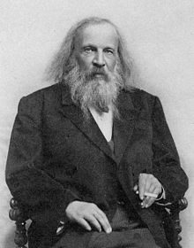

| I | Периодична таблица на Менделеев |
VII | VIII |  | ||||||
| 1 | (H) | H Водород |
He Хелий |
|||||||
| II | III | IV | V | VI | ||||||
| 2 | Li Литий |
Be Берилий |
B Бор |
C Въглерод |
N Азот |
O Кислород |
F9 Флуор |
Ne Неон |
||
| 3 | Na Натрий |
Mg Магнезий |
Al Алуминий |
Si Силиций |
P Фосфор |
S Сяра |
Cl Хлор |
Ar Аргон |
||
| 4 | K19 Калий |
Ca Калций |
Sc Скандий |
Ti Титан |
V Ванадий |
Cr Хром |
Mn Манган |
Fe Желязо |
Co Кобалт |
Ni Никел |
| Cu29 Мед |
Zn Цинк |
Ga Галий |
Ge Германий |
As Арсен |
Se Селен |
Br Бром |
Kr Криптон |
|||
| 5 | Rb Рубидий |
Sr Стронций |
Y39 Итрий |
Zr Цирконий |
Nb Ниобий |
Mo Молибден |
Tc Технеций |
Ru Рутенций |
Rh Родий |
Pd Паладий |
| Ag Сребро |
Cd Кадмий |
In49 Индий |
Sn Калай |
Sb Антимон |
Te Телур |
I Йод |
Xe Ксенон |
|||
| 6 | Cs Цезий |
Ba Барий |
La Лантан |
Hf Хафний |
Ta Тантал |
W Волфрам |
Re Рений |
Os Осмий |
Ir Иридий |
Pt Платина |
| Au59 Злато |
Hg Живак |
Tl Талий |
Pb Олово |
Bi Бисмут |
Po Полоний |
At Астат |
Rn Радон |
|||
| 7 | Fr Франций |
Ra Радий |
Ac69 Актиний |
Rf Ръдърфордий |
Db Дубний |
Sg Сиборгий |
Bh Борий |
Hs Хасий |
Mt Майтнерий |
Ds Дармщатий |